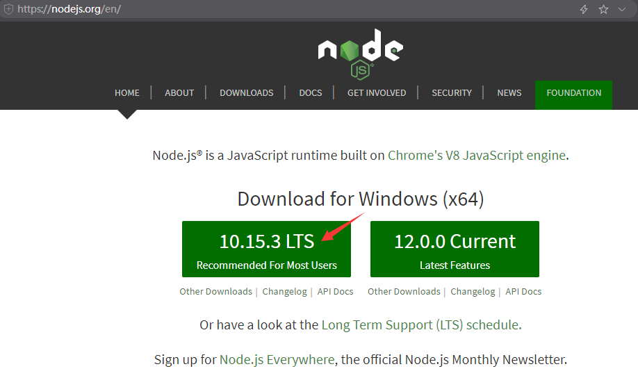
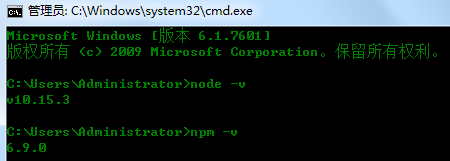
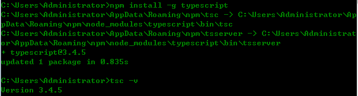
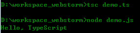
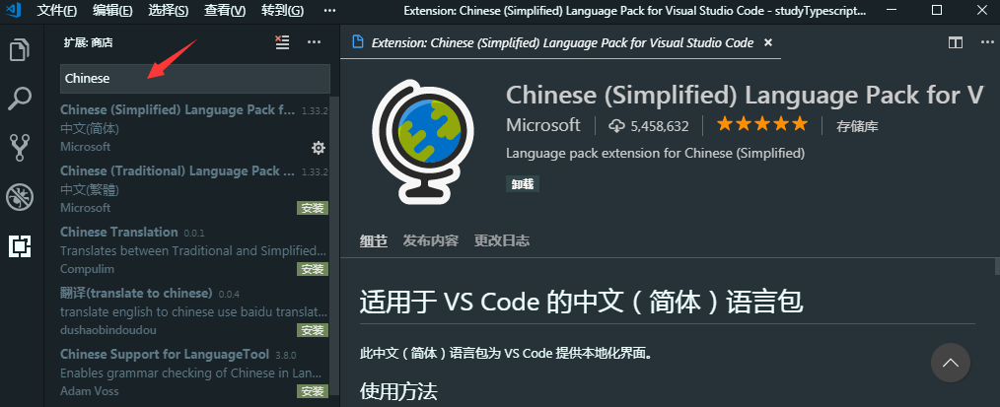
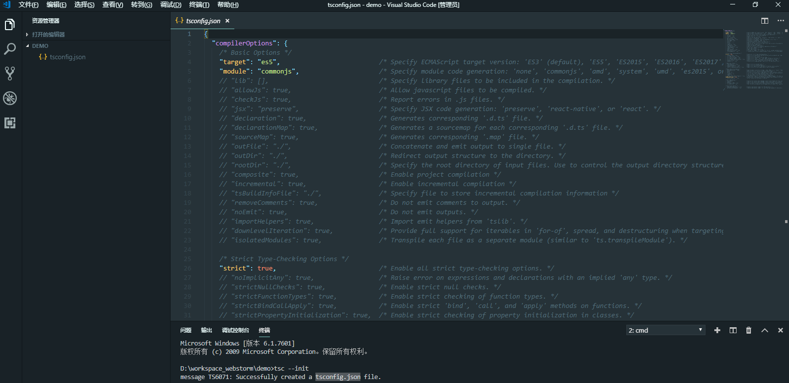
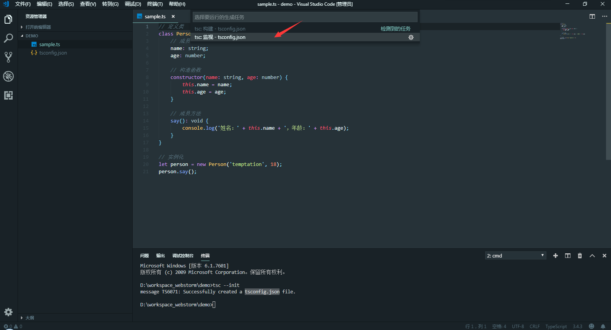
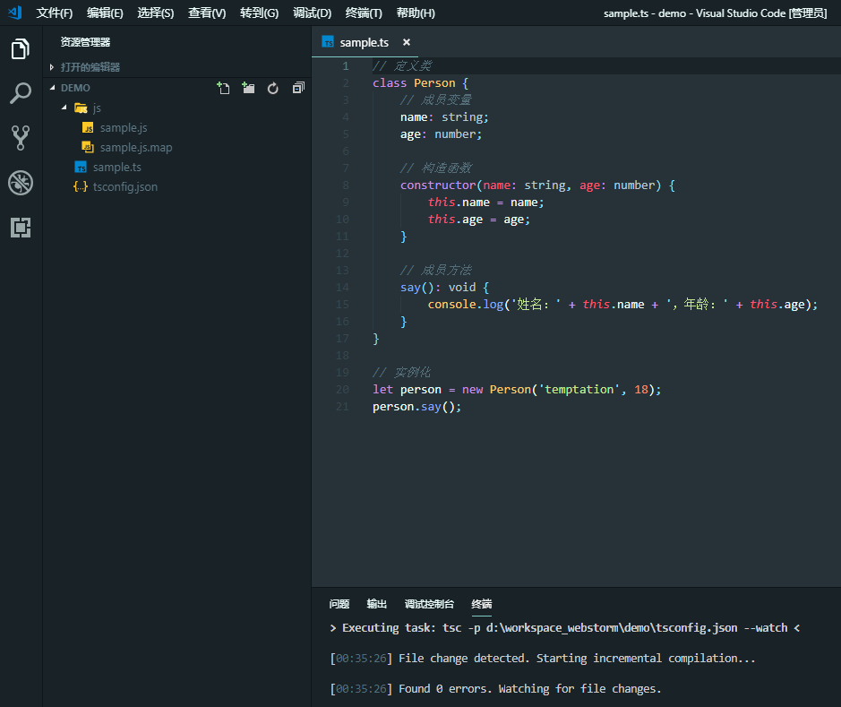
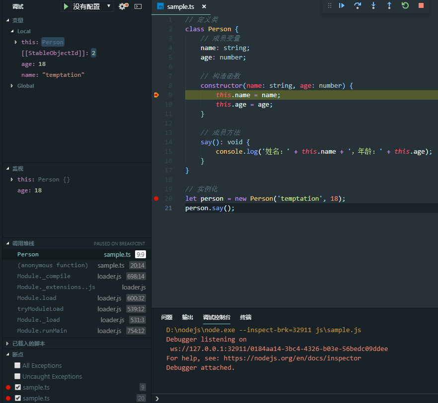

概述：本文描述TypeScript环境搭建，以及基于VSCode的自动编译设置和调试设置。网络上很多相应文章的方式过时了或者无法试验成功。
-------------------------------------------------------------------------------------------------------------------------
TypeScript简介：由微软开发的开源免费的编程语言，是JavaScript语言的一个超集，本质上为JavaScript语言添加了可选的静态类型和基于类的面向对象编程概念。
TypeScript的作者是大名鼎鼎的Anders Hejlsberg，没错，就是Delphi和C#之父。
-------------------------------------------------------------------------------------------------------------------------
1、TypeScript环境搭建：
① 操作系统：Windows 7 64位旗舰版
② 从Node.JS官网（https://nodejs.org/en/）下载当前稳定版本的Node.js（截至2019年04月27日，node-v10.15.3-x64.msi）
下载完毕，点击安装，选择好安装路径，一路回车安装即可。

③ 当前版本的Node.js默认就带有npm工具。所以，安装完毕后，在命令行窗口中分别输入node -v 和 npm -v，查看版本信息，验证是否安装成功。

④ 使用npm安装TypeScript，在命令行窗口中输入 npm install -g typescript，全局安装TypeScript。安装完成后，可以输入 tsc -v，查看TypeScript编译器的版本信息。

⑤ 新建一个demo.ts文件
function say(msg) {
return "Hello, " + msg;
}
let str = "TypeScript";
console.log(say(str));在命令行窗口中，使用tsc指令（输入： tsc demo.ts）编译为对应的JavaScript文件demo.js，打开该文件
function say(msg) {
return "Hello, " + msg;
}
var str = "TypeScript";
console.log(say(str));可以使用Node.js对生成的JavaScript文件进行执行

-------------------------------------------------------------------------------------------------------------------------
2、使用VSCode搭建开发环境
① 从VSCode官网（https://code.visualstudio.com）下载当前稳定版本（截至2019年04月27日，VSCodeUserSetup-x64-1.33.1.exe）
② 喜欢中文的朋友可以安装VSCode的中文插件

③ 创建目录demo，使用VSCode选择该目录，点击"终端"----->新建终端（快捷键：ctrl + shift + `），输入 tsc --init，创建出tsconfig.json文件。

④ tsconfig.json是TypeScript的配置文件，我们放开sourceMap 和 outDir的设置。其中，sourceMap是为了后续调试使用，outDir指定了自动编译时生成出JavaScript文件的位置。
{
"compilerOptions": {
/* Basic Options */
"target": "es5", /* Specify ECMAScript target version: 'ES3' (default), 'ES5', 'ES2015', 'ES2016', 'ES2017', 'ES2018', 'ES2019' or 'ESNEXT'. */
"module": "commonjs", /* Specify module code generation: 'none', 'commonjs', 'amd', 'system', 'umd', 'es2015', or 'ESNext'. */
// "lib": [], /* Specify library files to be included in the compilation. */
// "allowJs": true, /* Allow javascript files to be compiled. */
// "checkJs": true, /* Report errors in .js files. */
// "jsx": "preserve", /* Specify JSX code generation: 'preserve', 'react-native', or 'react'. */
// "declaration": true, /* Generates corresponding '.d.ts' file. */
// "declarationMap": true, /* Generates a sourcemap for each corresponding '.d.ts' file. */
"sourceMap": true, /* Generates corresponding '.map' file. */
// "outFile": "./", /* Concatenate and emit output to single file. */
"outDir": "./js", /* Redirect output structure to the directory. */
// "rootDir": "./", /* Specify the root directory of input files. Use to control the output directory structure with --outDir. */
// "composite": true, /* Enable project compilation */
// "incremental": true, /* Enable incremental compilation */
// "tsBuildInfoFile": "./", /* Specify file to store incremental compilation information */
// "removeComments": true, /* Do not emit comments to output. */
// "noEmit": true, /* Do not emit outputs. */
// "importHelpers": true, /* Import emit helpers from 'tslib'. */
// "downlevelIteration": true, /* Provide full support for iterables in 'for-of', spread, and destructuring when targeting 'ES5' or 'ES3'. */
// "isolatedModules": true, /* Transpile each file as a separate module (similar to 'ts.transpileModule'). */
/* Strict Type-Checking Options */
"strict": true, /* Enable all strict type-checking options. */
// "noImplicitAny": true, /* Raise error on expressions and declarations with an implied 'any' type. */
// "strictNullChecks": true, /* Enable strict null checks. */
// "strictFunctionTypes": true, /* Enable strict checking of function types. */
// "strictBindCallApply": true, /* Enable strict 'bind', 'call', and 'apply' methods on functions. */
// "strictPropertyInitialization": true, /* Enable strict checking of property initialization in classes. */
// "noImplicitThis": true, /* Raise error on 'this' expressions with an implied 'any' type. */
// "alwaysStrict": true, /* Parse in strict mode and emit "use strict" for each source file. */
/* Additional Checks */
// "noUnusedLocals": true, /* Report errors on unused locals. */
// "noUnusedParameters": true, /* Report errors on unused parameters. */
// "noImplicitReturns": true, /* Report error when not all code paths in function return a value. */
// "noFallthroughCasesInSwitch": true, /* Report errors for fallthrough cases in switch statement. */
/* Module Resolution Options */
// "moduleResolution": "node", /* Specify module resolution strategy: 'node' (Node.js) or 'classic' (TypeScript pre-1.6). */
// "baseUrl": "./", /* Base directory to resolve non-absolute module names. */
// "paths": {}, /* A series of entries which re-map imports to lookup locations relative to the 'baseUrl'. */
// "rootDirs": [], /* List of root folders whose combined content represents the structure of the project at runtime. */
// "typeRoots": [], /* List of folders to include type definitions from. */
// "types": [], /* Type declaration files to be included in compilation. */
// "allowSyntheticDefaultImports": true, /* Allow default imports from modules with no default export. This does not affect code emit, just typechecking. */
"esModuleInterop": true /* Enables emit interoperability between CommonJS and ES Modules via creation of namespace objects for all imports. Implies 'allowSyntheticDefaultImports'. */
// "preserveSymlinks": true, /* Do not resolve the real path of symlinks. */
/* Source Map Options */
// "sourceRoot": "", /* Specify the location where debugger should locate TypeScript files instead of source locations. */
// "mapRoot": "", /* Specify the location where debugger should locate map files instead of generated locations. */
// "inlineSourceMap": true, /* Emit a single file with source maps instead of having a separate file. */
// "inlineSources": true, /* Emit the source alongside the sourcemaps within a single file; requires '--inlineSourceMap' or '--sourceMap' to be set. */
/* Experimental Options */
// "experimentalDecorators": true, /* Enables experimental support for ES7 decorators. */
// "emitDecoratorMetadata": true, /* Enables experimental support for emitting type metadata for decorators. */
}
}⑤ 编写TypeScript文件sample.ts
// 定义类
class Person {
// 成员变量
name: string;
age: number;
// 构造函数
constructor(name: string, age: number) {
this.name = name;
this.age = age;
}
// 成员方法
say(): void {
console.log('姓名：' + this.name + '，年龄：' + this.age);
}
}
// 实例化
let person = new Person('temptation', 18);
person.say();⑥ 点击"终端"----->运行生成任务（快捷键：ctrl + shift + B），选择tsc:监视 - tsconfig.json，一会儿就会生成js目录以及对应ts文件的js文件


生成的JavaScript文件内容如下：
"use strict";
// 定义类
var Person = /** @class */ (function () {
// 构造函数
function Person(name, age) {
this.name = name;
this.age = age;
}
// 成员方法
Person.prototype.say = function () {
console.log('姓名：' + this.name + '，年龄：' + this.age);
};
return Person;
}());
// 实例化
var person = new Person('temptation', 18);
person.say();
//# sourceMappingURL=sample.js.map⑦ 调试TypeScript文件。在需要中断的位置，使用F9设置断点。再点击F5启动调试即可。F10单步调试。F11单步走入。

⑧ HTML文件不能直接使用TypeScript，需要使用TypeScript自动编译生成的JavaScript文件。
可以在VSCode中安装open in browser这个插件，运行时，在HTML文件中右键找到Open In Default/Other Browser，打开相应的浏览器。在浏览器的控制台看到执行结果
<!DOCTYPE html>
<html lang="en">
<head>
<meta charset="UTF-8">
<meta name="viewport" content="width=device-width, initial-scale=1.0">
<meta http-equiv="X-UA-Compatible" content="ie=edge">
<title>TypeScript使用示例</title>
</head>
<body>
<script src="js/sample.js"></script>
</body>
</html>